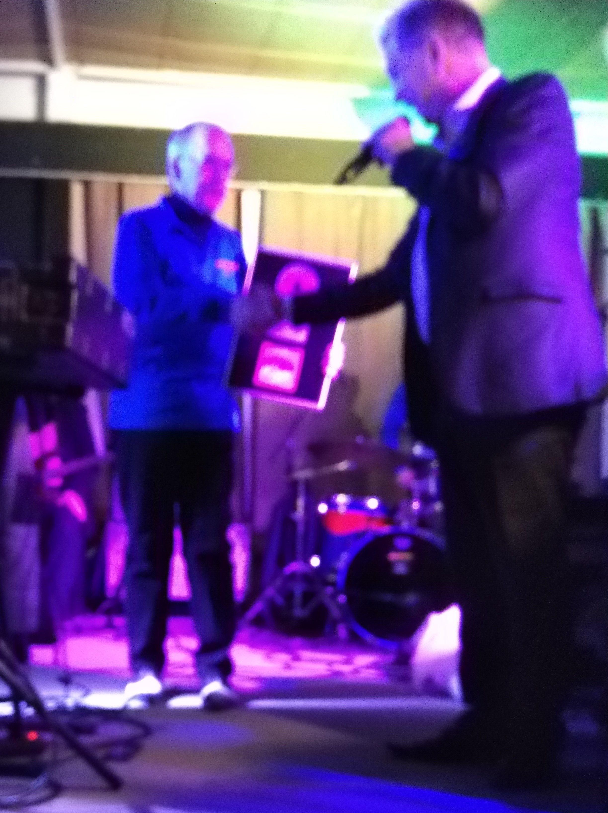
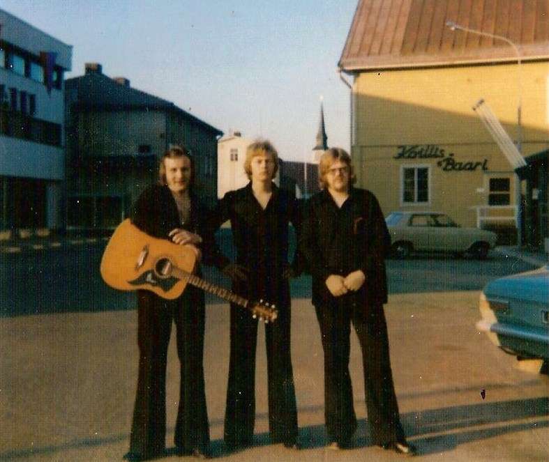
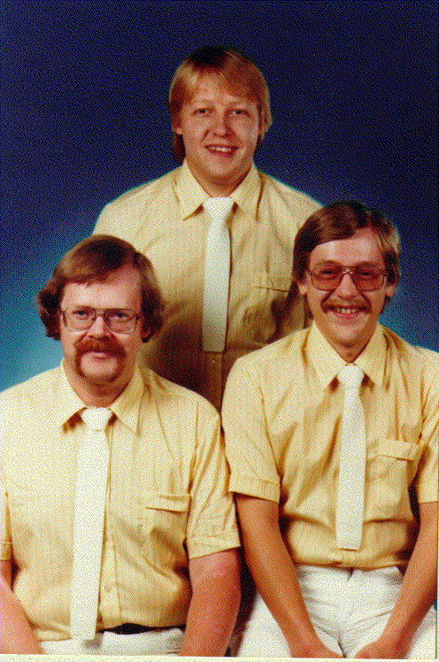
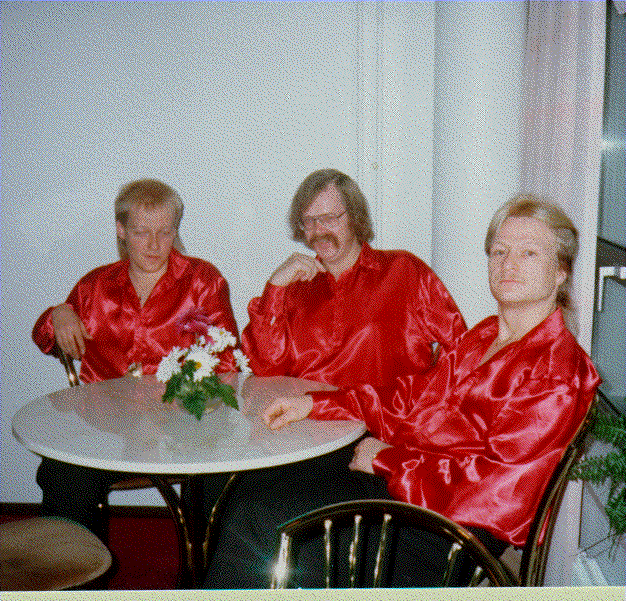
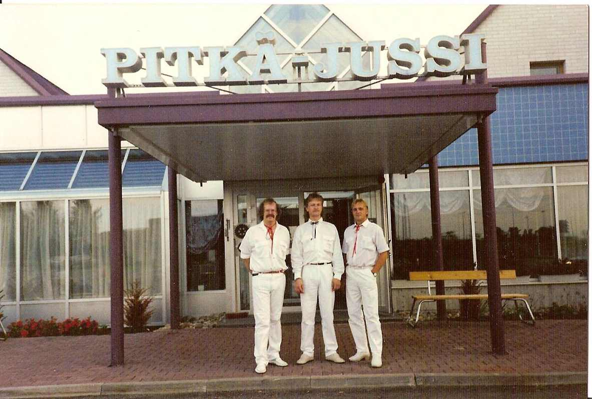
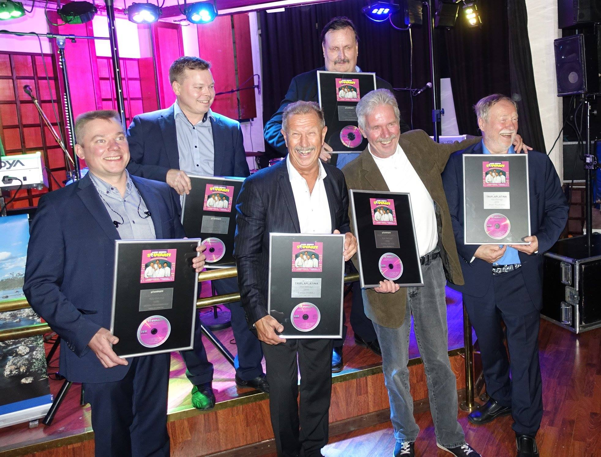
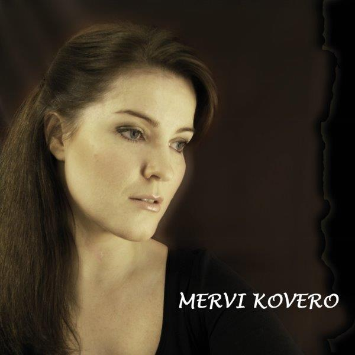
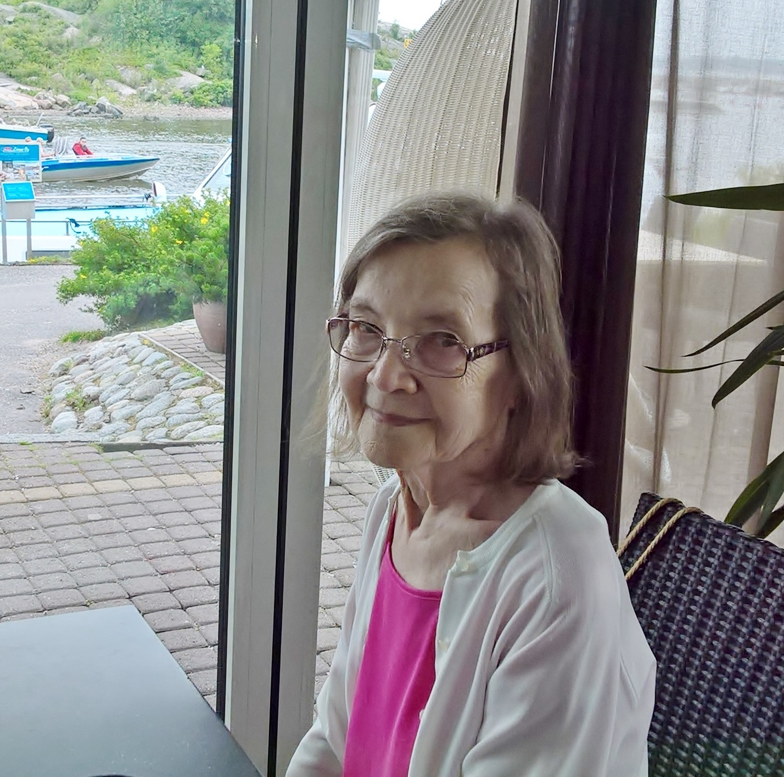

-
Ravintola- ja keikkamuusikko
Hangon Maretista
Sodankylän Kantakievariin
(tuhannen kapakan kautta...)
TutkijamuusikkoMuusikkolinkkejä:
SUOMEN MUSIIKIN TEKIJÄT
Pavi
PG Music
Suomen etnomusikologinen seura
Musiikkiarkisto
Muusikkojen Liitto
Taiteiden edistämiskeskus
Tanssiyhtyeitä ja paikkoja
Teosto
KIMMON SOITINKUVAGALLERIA
Pajarinhovi heinäkuu 2021
Ruusulinna helmikuu 2019


Tanhuhovi marraskuu 2018

Pajarinhovi heinäkuu 2018
Tänä vuonna ei tullut näin komeaa ruskaa ja Lapissa on jo lunta, ettei kannata sinnekään enää matkustaa. Mutta ei ole Itä-Pasila pelkkää "betonierämaata".

Juhannus 2022 Talin siirtolapuutarha: Harri Heinonen (Marino ja Sunrise-orchestra)

MUUTAMIA YHTYEITÄ (joista on säilynyt kuvia)
SAM JONES COMBO 2
TRIO MUSTA SURMA (Hotelli Koilliskunta Kemijärvi)


TRIO AHO

TRIO FLAMINGO (Imatra)

Hotelli Pitkä Jussi (Kurikka)

Korpilampi

AHTI NIKKOSEN KOTISIVUT
Tämä se on rockii, eikä, eiku 123... eiku 1234 sosiaalipolitiikkaa...
Yhteys- ja henkilötiedot:
Olen syntynyt Alavudella (Sapsalammilla) 1946.
Osan lapsuuttani asuin Ranualla ja Kajaanissa,
mutta suurimman osan lapsuuttani ja nuoruuttani elin Kiteellä (Kiteenlahdessa).
Yli 30-vuotta olen asunut Helsingissä, Itä-Pasilassa.
Koulutukseltani olen valtiotieteen tohtori (sosiaalipolitiikka).
Väitös Helsingin yliopisto 14.1.2005
ahtije.nikkonenagmail.com [a:lla korvattu e-mail merkki]
Puh. 050 - 517 9848Serkun luona Malminkartanolla ja kotona Itä-Pasilassa ja Roland E-A7


TRIPLAPLATINAA:
(Kultalevy 1996, platinalevy 2004, tuplaplatina 2013)
Lasse Hoikka & Souvarit
Sinisenä lintuna haluaisin lentää (YouTube)
Säv. & san. Ahti Nikkonen, sov. Teuvo Nummela.
7.9.2018 Saariselällä. Myyty yli 150 000 kpl.


KULTAA
Lasse Hoikka & Souvarit: Tulikirjaimin (YouTube)
(Säv. Markku Kuoppa & Ahti Nikkonen,
san. Maritta Niskanen, sov. Jukka Lampela
2022
Pauli Haapalainen: Bella Donna (YouTube)
(Säv. Ahti Nikkonen,san. Pauli Haapalainen, sov. Toni Nygård)
Antti Holopainen & SJC-Band: Rakkauden kukka sua kiittää (YouTube)
(Säv. & sov. Ahti Nikkonen & Seppo Summanen, san. Antti Holopainen )
SJC-Band: Rakkautta sain (YouTube)
(Säv. & sov. Ahti Nikkonen & Seppo Summanen, san. Tomi Suni)
2021
Lasse Hoikka & Souvarit: Ilta saapuu ystäväin
12. Sinisenä lintuna haluaisin lentää (YouTube, uusi versio)
(Säv & san. Ahti Nikkonen, sov. Pauli Ruuskanen)
15. Ethän lähde näin (YouTube)
(Säv. Ahti Nikkonen, san. Jarkko Honkanen, sov. Marko Jolkkonen)
Antti Holopainen & Kyösti Hartikainen: SIELUN MAISEMA
(sov. & taustat: Ahti Nikkonen & Seppo Summanen: SJC-Band
+ harmonikka: Kari Parviainen 1, 3, ja 7)
1) Kyösti Hartikainen: Sielun maisema (YouTube)
(Säv. Antti Holopainen, san. Kyösti Hartikainen & Antti Holopainen)
2) Antti Holopainen: Kuu kaiken tietää (YouTube)
(Säv. Ahti Nikkonen & Seppo Summanen, san. Antti Holopainen)
3) Kyösti Hartikainen: Sitten joskus (YouTube)
(Säv. Ahti Nikkonen & Seppo Summanen,
san. Päivikki Juvakoski-Heino)
4) Antti Holopainen: Niin kaikki ois toisin (YouTube)
(Säv. & san. Antti Holopainen)
5) Kyösti Hartikainen: Kingi kaupungin (YouTube)
(Säv. Ahti Nikkonen & Seppo Summanen,
san. Päivikki Juvakoski-Heino)
6) Antti Holopainen: Oon valmis rakkauteen (YouTube)
(Säv. Ahti Nikkonen & Seppo Summanen, san. Antti Holopainen)
7) Kyösti Hartikainen: Tango Elinalle (YouTube)
(Säv. Antti Holopainen, san. Kyösti Hartikainen & Antti Holopainen)
8) Antti Holopainen: Ilman sinua (YouTube)
(Säv. Ahti Nikkonen & Seppo Summanen,
san. Ahti Nikkonen & Kyllikki Räsänen)
9) Kyösti Hartikainen: Ruusunpunainen (YouTube)
(säv. Ahti Nikkonen & Seppo Summanen, san. Marjo Pajuranta)
10) Antti Holopainen: On sulla sydän enkelin (YouTube)
(säv. Ahti Nikkonen & Seppo Summanen, san. Maritta Niskanen)
11) Antti Holopainen & Kyösti Hartikainen: Ei kyyneleitä voi selittää (YouTube)
(säv. Ahti Nikkonen & Seppo Summanen, san. Maritta Niskanen)
SJC-Band: SOINTUJEN VÄRIMAAILMA
(Sävelletty Raili Ahon Taidenäyttelyyn: Pyterlahden hovi 15.7—15.8.2021)
(Säv. & sov. Ahti Nikkonen & Seppo Summanen)
1) SJC-Band: Keinuvat värit (YouTube)
2) SJC-Band: Jousien ja puhaltimien tanssia (YouTube)
3) SJC-Band: Äänimaisema (YouTube)
4) SJC-Band: Barokkimaisemaa (YouTube)
5) SJC-Band: Isolla pensselillä (YouTube)
6) SJC-Band: Sävelkirjo (YouTube)
7) SJC-Band: Rytmien värit (YouTube)
8) SJC-Band: Syksyn värit (YouTube)
9) SJC-Band: Sininen taivas (YouTube)
10) SJC-Band: Yön sävyt (YouTube)
11) SJC-Band: Steel drums - Yön värit (YouTube)
12) SJC-Band: Kuumat tunteet (YouTube)
13) SJC-Band: Kesätunnelmaa (YouTube)
14) Antti Holopainen & SJC-Band: Ilman sinua
15) Antti Holopainen & SJC-Band: Rakkauden kukka
16) SJC-Band: Fanfaari
Antti Holopainen & SJC-Band: Ilman Sinua (YouTube)
(Säv. & sov. Ahti Nikkonen & Seppo Summanen,
san. Ahti Nikkonen & Kyllikki Räsänen)
SJC-Band: Bella (YouTube) (Säv. & san. Jack Scott)
SJC-Band: Kun päättyi meidän rakkaus (YouTube)
(Lähti lokit lentoon silloin)
(Säv. & sov. Ahti Nikkonen & Seppo Summanen,
san. Päivikki Juvakoski-Heino.) SJCCD11
Sami Niemelä & SJC-Band: Odota en (YouTube)
(Ciacci Enrico, suom. san. Saukki)
Sami Niemelä & SJC-Band: Laula kanssain (YouTube)
(Sing My Love Song: Dave McRonald & R.Dunhills)
Sami Niemelä & SJC-Band: Suuret setelit (YouTube) (Greenback dollar
säv. Hoyt Wayne Axton & Ken Ramsey, suom. san. Saukki)
2020
Antti Holopainen: On sulla sydän enkelin (YouTube)
(Säv. & sov. Ahti Nikkonen & Seppo Summanen
san. Maritta Niskanen. Tausta: SJC-Band) SJCCD07.
Antti Holopainen & Kyösti Hartikainen: Jäin myrskyyn ja tuuliin
(Säv. & sov. Ahti Nikkonen & Seppo Summanen. Tausta SJC-Band) SJCCD03
1) Antti Holopainen: Elämän tie (YouTube)
(San. A. I. Piippo)
2) Kyösti Hartikainen: Hetkeksi hiipunut (YouTube)
(San. Päivikki Juvakoski-Heino)
3) Antti Holopainen: Enkelin kosketus (YouTube)
(San. Keijo Laitinen)
4) Kyösti Hartikainen: Tahdon vierees nukahtaa (YouTube)
(San. Keijo Laitinen)
5) Antti Holopainen: Jos vain sinut löytäisin (YouTube)
(San. Jukka Toivonen)
6) Kyösti Hartikainen: Kaiken saa takaisin (YouTube)
(San. Maritta Niskanen)
7) Antti Holopainen: Elämän valssi (YouTube)
(San. Olavi Koskinen)
8) Kyösti Hartikainen: Olen rakastanut kerran (YouTube)
(San. Päivikki Juvakoski-Heino)
9) Antti Holopainen & Kyösti Hartikainen: Jäin myrskyyn ja tuuliin (YouTube)
(San. Tomi Valo)
Sami Niemelä: Muistan kuinka sinuun rakastuin (YouTube)
(Säv. & sov. Ahti Nikkonen & Seppo Summanen,
san. Tomi Suni. Tausta SJC-Band)
Sami Niemelä: Sokea piste (YouTube)
(Säv. & sov. Ahti Nikkonen & Seppo Summanen
san. Keijo Laitinen. Tausta: SJC-Band)
Sami Niemelä: Näin jossakin sanottiin (YouTube)
(Säv. & sov. Ahti Nikkonen & Seppo Summanen
san. Maritta Niskanen. Tausta: SJC-Band)
Sami Niemelä: Täältä löytyy rauha (YouTube)
(Säv. & sov. Ahti Nikkonen & Seppo Summanen
san. A. I. Piippo. Tausta SJC-Band)
2019
Sami Niemelä: Tähtitarhain taa (YouTube)
(Säv. & sov. Ahti Nikkonen & Seppo Summanen
san. Tomi Suni. Tausta: SJC-Band.)
Sami Niemelä: Paljon Muistoja (YouTube)
(Säv. & sov. Ahti Nikkonen & Seppo Summanen,
san. Janne E. Aho. Tausta: SJC-Band.) JEANCD1.
Sami Niemelä: Tähdenlentona vain (YouTube)
(Säv. & sov. Ahti Nikkonen & Seppo Summanen,
san. Tomi Suni) Tausta: SJC-Band. ASTOMCD12
Kyösti Hartikainen & Antti Holopainen: Lähtöjä ja Paluita:
1) Antti Holopainen: Askel rakkauteen (YouTube)
(Säv. & sov. Ahti Nikkonen & Seppo Summanen,
san. Keijo Laitinen) Tausta: SJC-Band ASTOMCD9.
2) Kyösti Hartikainen: Jos uskon haaveeseen (YouTube)
(Säv. & sov. Ahti Nikkonen & Seppo Summanen,
san. Maritta Niskanen) Tausta: SJC-band ASTOMCD10.
3) Antti Holopainen: Tämä outo ja kaunis tie (YouTube)
(Säv. & sov. Ahti Nikkonen & Seppo Summanen,
san. Päivikki Juvakoski-Heino)
4) Kyösti Hartikainen: Ehkäpä jään (YouTube)
(Säv. & sov. Ahti Nikkonen & Seppo Summanen,
san. Tomi Suni) Tausta: SJC-band.
5) Antti Holopainen: Luokses taas saavun (YouTube)
(Säv. & sov. Ahti Nikkonen & Seppo Summanen,
san. Tomi Suni) Tausta: SJC-band.
6) Kyösti Hartikainen: Kaukana kaukana kerran (YouTube)
(Säv. & sov. Ahti Nikkonen & Seppo Summanen,
san. Päivikki Juvakoski-Heino) Tausta: SJC-band.
7) Antti Holopainen & Kyösti Hartikainen: Palaisin luokses (YouTube)
(Säv. & sov. Ahti Nikkonen & Seppo Summanen,
san. Tomi Suni) Tausta: SJC-band.
2018
Lasse Hoikka & Souvarit: Tanssilavan tunnelmaa (YouTube)
(Säv, Ahti Nikkonen & Seppo Summanen
san. Tomi Suni. Sov. Jari Puhakka)
Tätä Suomi tanssii listalla 35 viikkoa.
Kaunis maailma 40-Vuotis Juhlatupla cd Mager-29 2018
Tanssilavan tunnelmaa Mager 031 - FI73H1800011 2018
Marjo Nevala: Bailataan (YouTube)
(Säv & sov. Ahti Nikkonen & Seppo Summanen
san. Nina J hedkrock.) Tausta SJC-band.
Masterointi, Label ja CD-monistus: Jurvan Musiikkipaja
© & ℗ 2018 ASTOMCD-08
Mikko Niemelä: Kesällä kerran (YouTube)
(Säv. & sov. Ahti Nikkonen & Seppo Summanen
san. Olavi Koskinen) Tausta: SJC-band.
Cd-monistus, kannen suunnittelu: Jurvan Musiikkipaja
© & ℗ 2018 ASTOMCD-07
Mikko Niemelä: Sua ainoastaan rakastan (YouTube)
(Säv. & sov. Ahti Nikkonen & Seppo Summanen,
san. Olavi Koskinen,) Tausta: SJC-band.
© & ℗ 2018 ASTOMCD-07
Mikko Niemelä: Sinulle (YouTube)
(Säv. Asko Hannuksela, san. Jarmo Ojanen)
Tausta: SJC-band.
© & ℗ 2018 ASTOMCD-07
Mikko Niemelä: Rakkauden syksy (YouTube)
(Säv. & sov. Ahti Nikkonen & Seppo Summanen
san. Raimo Kokko)
Tausta: SJC-band.
© & ℗ 2018 ASTOMCD-07
Ulla-Jaana Riekkoniemi: Kapinoiva sydän (YouTube)
(Säv. & sov. Ahti Nikkonen & Seppo Summanen,
san. Marjo Pajuranta) Tausta SJC-BAND.
© & ℗ 2018 ASTOMCD-6
Ulla-Jaana Riekkoniemi: Vain rakkaus jää (YouTube)
(Säv. & sov. Ahti Nikkonen & Seppo Summanen,
san. Tomi Suni) Tausta SJC-BAND.
© & ℗ 2018 ASTOMCD-6
Ulla-Jaana Riekkoniemi: Tuollainen tyttö (YouTube)
(A Girl like You, Jerry Lordan, suom. san. Sauvo Puhtila)
Tausta SJC-BAND.
© & ℗ 2018 ASTOMCD-6
Ulla-Jaana Riekkoniemi: Paljon sanomatta jää (YouTube)
(Säv. & san. Jukka Kuoppamäki)
Tausta SJC-BAND.
© & ℗ 2018 ASTOMCD-6
Sami Niemelä: Sydämeen suljettu (YouTube)
(Säv. Ahti Nikkonen, san. Maritta Niskanen,
sov. Ahti Nikkonen & Seppo Summanen, tausta SJC-BAND,
taustalaulu Seppo Summanen)
© & ℗ 2018 ASTOMCD-5
Sami Niemelä: Miksi juuri sinä (YouTube)
(Säv. & sov. Ahti Nikkonen & Seppo Summanen,
san. Marjo Pajuranta, tausta SJC-BAND,
soolokitara Pepe Kovanen, taustalaulu Seppo Summanen)
© & ℗ 2018 ASTOMCD-5
Marjut Dillström: Auta minut yön yli (YouTube)
(Säv. Ahti Nikkonen & Seppo Summanen,
san. Maritta Niskanen, sov. Jukka Laaksonen,
taustalaulu Madonnat-kvartetti)
Sävelten siivin 2018.
SJC-BAND: Luokses taas saavun (YouTube)
(säv. & sov. Ahti Nikkonen & Seppo Summanen,
san. Tomi Suni, taustalaulu Seppo Summanen)
© & ℗ 2017 ASTOMCD-4
SJC-BAND: Sateenuhka silmissään (YouTube)
(säv. & sov. Ahti Nikkonen & Seppo Summanen,
san. Maritta Niskanen, taustalalu Seppo Summanen)
© & ℗ 2017 ASTOMCD-4
SJC-BAND: Tähän rakkauteen (YouTube)
(säv. & sov. Ahti Nikkonen & Seppo Summanen,
san. Päivikki Juvakoski-Heino, taustalaulu Seppo Summanen)
© & ℗ 2017 ASTOMCD-4
SJC-BAND: Tippa sydänverta (YouTube)
(säv. & sov. Ahti Nikkonen & Seppo Summanen,
san. Jussi Tolonen, taustalaulu: Seppo Summanen)
© & ℗ 2017 ASTOMCD-4
Mikko Niemelä: Antaa tulla lunta tupaan (YouTube)
(Säv. Ahti Nikkonen & Seppo Summanen & Tomi Suni,
san. Tomi Suni, sov. Ahti Nikkonen & Seppo Summanen,
taustalaulu: Seppo Summanen, tausta: SJC-band.
Masterointi, cd-monistus, laulujen äänitys: Jurvan Musiikkipaja)
© & ℗ 2017 ASTOMCD-03
Mikko Niemelä: Rantalava (YouTube),
Säv. Asko Hannuksela, san. Jarmo Ojanen
Tausta: SJC-band, taustalaulu: Seppo Summanen
Masterointi, cd-monistus, laulujen äänitys: Jurvan Musiikkipaja
© & ℗ 2017 ASTOMCD-03
Mikko Niemelä: Sinä lohduta mua (YouTube)
Säv. & sov. Ahti Nikkonen & Seppo Summanen,
san. Päivikki Juvakoski-Heino,
Tausta: SJC-band, taustalaulu: Seppo Summanen
Masterointi, cd-monistus, laulujen äänitys: Jurvan Musiikkipaja
© & ℗ 2017 ASTOMCD-03
Mikko Niemelä: Vanha kunnon twist (YouTube)
Säv. & sov. Ahti Nikkonen & Seppo Summanen,
san. Tomi Suni, Tausta: SJC-band, taustalaulu: Seppo Summanen
Masterointi, cd-monistus, laulujen äänitys: Jurvan Musiikkipaja
© & ℗ 2017 ASTOMCD-03
Hannu Hautaniemi: Yön musta joutsen (YouTube)
Säv. Ahti Nikkonen & Seppo Summanen, san. Nina J. Hedkrok
Sov. Janne Hyöty, Sugar House Publishing. HH12017.
Mikko Niemelä: Onnen kosketus (YouTube)
Säv. & sov. Ahti Nikkonen & Seppo Summanen, san. Kyösti Timonen.
Tausta SJC-band, taustalaulut Seppo Summanen.
Mikko Niemelä: Uusi kevät (YouTube)
Säv. & sov. Ahti Nikkonen & Seppo Summanen, san. Tomi Suni.
Taustat SJC-band, taustalaulut Seppo Summanen.
Mikko Niemelä: Kotijärvi-valssi (YouTube)
Säv. Asko Hannuksela, san. Jarmo Ojanen
Sov. Ahti Nikkonen & Seppo Summanen, tausta SJC-band,
taustalaulut Seppo Summanen.
Mikko Niemelä: Häätango (YouTube)
Säv. Asko Hannuksela, san Jarmo Ojanen.
Sov. Ahti Nikkonen & Seppo Summanen, tausta SJC-band,
taustalaulut Seppo Summanen.
Mikko Niemelä: Sä olet kaikki. (YouTube)
Säv. & sov. Ahti Nikkonen & Seppo Summanen, san. Tomi Suni
Taustat SJC-band, taustalaulut Seppo Summanen.
ASTOMCD-02 2016, (P) ASTOM.
Aki Hietala & Jaska Mäkynen: Kalajoki. (YouTube)
Jaska Mäkynen: Kuin lailla kauneimman ruusun. (YouTube)
Aki Hietala: Tähdenlentona vain (YouTube)
1,2 & 3: Säv. Ahti Nikkonen & Seppo Summanen,
san. Tomi Suni. 1 & 2: tausta SJC-band,
1) Kitarasoolo: Harri Risku,
3) Kitarat: Pepe Kovanen, basso: Topi Hartikainen,
koskettimet: Pasi Suikkanen, rummut Jarmo Peippo.
Saksofonit, taustalaulu ja niiden sovitus: Aki Hietala (1-3).
Sov. Ahti Nikkonen & Seppo Summanen (1-2), Pepe Kovanen (3).
© & ℗ ASTOMCD-01 2016
Rainer Bollström: Salattu rakkaus (YouTube)
Säv. Ahti Nikkonen - san. Kyösti Timonem - sov. Antti Toivola
Miehen elämää RBCD201401
RAJAN MIEHET: Rukajärven tie.
Säv. Ahti Nikkonen - san. Mauri Kärkkäinen
Tuomo Rönkkö: Kaino Aino SJCCD02
KANSAN KARAOKE 4 (KAKA4) [Karaokeversio]
Säv. & sov. Ahti Nikkonen & Seppo SummanenRönkkö -
san. Maritta Niskanen
Tuomo Rönkkö: Rankkaa ylpeyden taksaa (Kantakapakassa)
KANSAN KARAOKE 4 (KAKA4): [Karaokeversio]
Säv. & sov. Ahti Nikkonen & Seppo Summanen -
san. Päivikki Juvakoski-Heino.
Tuomo Rönkkö: Häntä (mä rakastan häntä).
Säv. & sov. Ahti Nikkonen & Seppo Summanen -
san. Timo Sinnemaa.
Tuomo Rönkkö: Täältä löytyy rauha.
Säv. & sov. Ahti Nikkonen & Seppo Summanen -
san. A. I. Piippo
Robert Orjavuono: Täyden kympin nainen
KANSAN KARAOKE 4 (KAKA4): [Karaokeversio]
Lasse Hoikka: Luota aina unelmiin (YouTube).
(Säv. Ahti Nikkonen, san. Olavi Koskinen, sov. Pauli Ruuskanen)
KANSAN KARAOKE 3 [KAKA3] (2013): [Karaokeversio]
2012

Mervi Kovero: Ketään syytä en
(Säv. Ahti Nikkonen - San. Birgitta Äijälä)
http://www.youtube.com/watch?v=ea8e9R37thc&feature=youtu.be
MJK 2012
KANSAN KARAOKE 3 [KAKA3[ (2013): [Karaokeversio]
Mervi Kovero: Sateinen on Wimbledon
(Säv. Ahti Nikkonen & Seppo Summanen - San. Päivikki Juvakoski-Heino)
http://www.youtube.com/watch?v=oGFq-oCGnPw&feature=plcp
MJK 2012
KANSAN KARAOKE 2 [KAKA2] (2013): [Karaokeversio]
Mervi Kovero: Sua koskaan kuunnellut en
(Säv. Markku Kuoppa & Ahti Nikkonen - San. Anja Veck)
http://www.youtube.com/watch?v=JzWyXUB1sM4&feature=youtu.be
MJK 2012
Mervi Kovero: Tanssi aurinkoon
(Säv. Ahti Nikkonen & Seppo Summanen - San. Maritta Niskanen)
http://www.youtube.com/watch?v=C7Pa6iM0gPo&feature=youtu.be
MJK 2012 KANSAN KARAOKE 2 [KAKA2] (2013): [Karaokeversio]
Souvarit: Tulikirjaimin. Souvarit ja Pekkaniskan Pojat:
Tanssikansan suosikit CD 2012.
(Säv. Markku Kuoppa & Ahti Nikkonen - san. Maritta Niskanen,
sov. Jukka Lampela).
Terho Torni (2012): Rakkaimpas sun.
(Säv. Ahti Nikkonen - san. Janne E. Aho,
sov. Ahti Nikkonen & Terho Torni).
BIISINURKKA 3 KARAOKE DVD, BIISINURKKA 3 CD.
http://www.youtube.com/watch?v=qt4obZE73jo&feature=plcp
Tuomo Rönkkö (2012): Pieni kuva sinusta
(säv. & sov. Ahti Nikkonen & Seppo Summanen - san. Jussi Tolonen).
BIISINURKKA 3 KARAOKE DVD, BIISINURKKA 3 CD.
http://www.youtube.com/watch?v=na--QvHSz0E&feature=context-cha
2011
Tuomo Rönkkö (2011):
Pilvipoutaa (YouTube)
(säv. & sov. Ahti Nikkonen & Seppo Summanen -
san. Maritta Niskanen)
SJCCD-1.
KANSAN KARAOKE 4 (KAKA4) [Karaokeversio]
Tuomo Rönkkö (2011):
Joku laulaa suihkussa
(säv. & sov. Ahti Nikkonen & Seppo Summanen -
san. Päivikki Juvakoski-Heino).
SJCCD-1.
Tuomo Rönkkö (2011):
Kielin kitaran (sua mä rakastan)
(säv. & sov. Ahti Nikkonen & Seppo Summanen -
san. Kyösti Timonen).
SJCCD-1.
Tuomo Rönkkö (2011):
Pieni kuva sinusta (Youtube)
(säv. & sov. Ahti Nikkonen & Seppo Summanen -
san. Jussi Tolonen)
SJCCD-1.
Raivopäät Feat, Friends (2010/2011): Rauhaa & Rakkautta. (Näyte mp3).
(Säv. & san. Ahti Nikkonen).
DIGITAL SINKKU (2010).
PUNKROCK JUKEBOX 4 ((2011).
PROPAGANDA RECORDS. PRO 2095.
Asko Leinonen (2011): Kiertäjän tie. (Näyte mp3).
(Säv. & sov. Ahti Nikkonen & Seppo Summanen, san. Kyösti Timonen).
KUU KULKEE. CDAL2.
Asko Leinonen (2011): Yksinäisen ystäväksi. (Näyte mp3).
(Säv. & sov. Ahti Nikkonen & Seppo Summanen, san. Kyösti Timonen).
KUU KULKEE. CDAL2.
Terho Torni (2011): Paha Pajari.
(Säv & san. Ahti Nikkonen, sov. Ahti Nikkonen & Terho Torni).
MONTUN HENKI. FLAME MUSIC DICD 18.
Ismo Pyykkö (2011): En pelkää elämää.
(Säv. & sov. Ahti Nikkonen, san. Olavi Koskinen).
RAKKAUS MAISEMAAN. KOPINACD-5.
Ismo Pyykkö (2011): Kaipausta tango soi.
(Säv. & sov. Ahti Nikkonen, san. Olavi Koskinen).
RAKKAUS MAISEMAAN. KOPINACD-5.
Ismo Pyykkö (2011): Kun ruusut kukkii.
(Säv. Ahti Nikkonen, san. Kyösti Timonen, sov. Erkki Friman).
RAKKAUS MAISEMAAN. KOPINACD-5.
Ismo Pyykkö (2011): Lappi on kauneuden maa.
(Säv. & sov. Ahti Nikkonen, san. Olavi Koskinen).
RAKKAUS MAISEMAAN. KOPINACD-5.
Ismo Pyykkö (2011): Luota hyvyyden ihmeeseen.
(Säv. & sov. Ahti Nikkonen, san. Olavi Koskinen).
RAKKAUS MAISEMAAN. KOPINACD-5.
Ismo Pyykkö (2011): Maailman kaunein kukkanen.
(Säv. Ahti Nikkonen, san. Kyösti Timonen, sov. Erkki Friman).
RAKKAUS MAISEMAAN. KOPINACD-5.
Ismo Pyykkö (2011): Niin ihmeellinen on rakkaus.
Säv. Ahti Nikkonen & Ismo Pyykkö,
san. Ismo Pyykkö & Olavi Koskinen, sov. Jussi Eriksson).
RAKKAUS MAISEMAAN. KOPINACD-5.
Ismo Pyykkö (2011): Olet aurinkoni.
(Säv. Ahti Nikkonen, san. Olavi Koskinen,
sov. Ahti Nikkonen & Robert Orjavuono).
RAKKAUS MAISEMAAN. KOPINACD-5.
Ismo Pyykkö (2011): On elämä ihmeellinen.
(Säv. & sov. Ahti Nikkonen, san. Olavi Koskinen).
RAKKAUS MAISEMAAN. KOPINACD-5.
Ismo Pyykkö (2011): Rakkauden valkosiivet.
(Säv. & sov. Ahti Nikkonen, san. Olavi Koskinen).
RAKKAUS MAISEMAAN. KOPINACD-5.
Ismo Pyykkö (2011): Sielujen sinfoniaa.
(Säv. & sov. Ahti Nikkonen, san. Olavi Koskinen).
RAKKAUS MAISEMAAN. KOPINACD-5.
Ismo Pyykkö (2011): Syliisi sun.
(Säv. Ahti Nikkonen, san. Kyösti Timonen, sov. Jussi Eriksson).
RAKKAUS MAISEMAAN. KOPINACD-5.
Ismo Pyykkö (2011): Tanssi vain.
(Säv. Ahti Nikkonen, san. Olavi Koskinen, sov. Seppo Korhonen).
RAKKAUS MAISEMAAN. KOPINACD-5.
Ismo Pyykkö (2011): Tule luokseni jälleen.
(Säv. & sov. Ahti Nikkonen, san. Olavi Koskinen).
RAKKAUS MAISEMAAN. KOPINACD-5.
Ismo Pyykkö (2011): Voisinpa siivillä liitää.
(Säv. Ahti Nikkonen, san. Olavi Koskinen,
sov. Ahti Nikkonen & Robert Orjavuono).
RAKKAUS MAISEMAAN. KOPINACD-5.
2010
Terho Torni (2010): Kiteen Kirkas. (Videonäyte: wmv).
(Säv. Ahti Nikkonen, san. Einari Havukainen,
sov. Timo Hacklin & Jorma Matikainen & Ahti Nikkonen & Terho Torni.)
BIISINURKKA 2 KARAOKE DVD, BNDVD-00002.
BIISINURKKA BN2 KOKOELMA CD, BNCD-0003.
Terho Torni (2010): Paha Pajari. (Videonäyte: wmv).
(Säv. & san. Ahti Nikkonen, sov. Ahti Nikkonen & Terho Torni).
BIISINURKKA 2 KARAOKE DVD, BNDVD-00002.
BIISINURKKA BN2 KOKOELMA CD, BNCD-0003.
Terho Torni (2010): Pirun tyhmä mies. (Videonäyte: wmv).
(Säv. Ahti Nikkonen, san. Kyösti Timonen).
BIISINURKKA 2 KARAOKE DVD, BNDVD-00002.
BIISINURKKA BN2 KOKOELMA CD, BNCD-0003.
Nina Rantanen (2010): Kaipaan sua ainiaan. (Näyte: mp3).
(Säv. Ahti Nikkonen, san. Olavi Koskinen, sov. Tapio Moisanen).
KAJAANIN VIIHDESOLISTIT: SIELUN SISÄLLÄ TUULEE. KVSCD-7.
Sam Jones Combo (2010): Potsipäivät. (Video).
(Säv. & san. & sov. Ahti Nikkonen & Seppo Summanen).
AJENCD-6.
Richard (Robert Orjavuono) (2010): A rock'n' roll robot. (Video).
(Säv. Ahti Nikkonen & Robert Orjavuono,
words: Lars E. Carlsson & Hans Siden).
Lasse Hoikka (2010): Luota aina unelmiin. (Näyte: mp3).
(Säv. Ahti Nikkonen, san. Olavi Koskinen, sov. Pauli Ruuskanen).
LASSE HOIKKA: JOS SINÄKIN TAHDOT.
Terho Torni (2010): Paha Pajari. (Video).
(Säv. & san. Ahti Nikkonen, sov. Ahti Nikkonen & Terho Torni).
AJENCD-3B.
Terho Torni (2010): Kiteen Kirkas. (Videonäyte: wmv).
(Säv. Ahti Nikkonen, san. Einari Havukainen,
sov. Timo Hacklin & Jorma Matikainen & Ahti Nikkonen & Terho Torni).
AJENCD-3B
Taifun (2010/1979): Paha paha paha Pajari.
(Säv. & san. Ahti Nikkonen, sov. Jorma Matikainen).
AJENCD-3B.
Vennu (Sven-Erik Ikola) (2010/1978): Kiteen Kirkas. (Video).
(Säv. Ahti Nikkonen, san. Einari Havukainen, sov. Jorma Matikainen).
AJENCD-3B.
2009
Richard (Robert Orjavuono) (2009): Pilvitie. (Video).
(Säv. Ahti Nikkonen, san. Aune Hakulinen). AJENCD3.
Miia Mäkelä & Siluetti (2009): Kuljen luokse pihakoivujen. (Näyte: mp3).
(Säv. Ahti Nikkonen, san. Birgitta Äijälä, sov. Keijo Honkanen).
Kajaanin tanssimusiikkiklubi CD FI-KTB-09 2009.
2008
Jouni Ruokamo (2008): Sielujen Sinfoniaa. (Näyte: mp3).
(Säv. Ahti Nikkonen, san. Olavi Koskinen. sov. Jouni Ruokamo).
Lasse Hoikka & Souvarit: 30-vuotis Juhlalevy. PETSICD-14 2008.
Mikko Niemelä (2008): Kortti vie kortti tuo. (Näyte: mp3).
(Säv. Ahti Nikkoneni, san. Janne E. Aho, sov. Lucjan Czapilicki). FMCD-222.
Jukka Lampela (2008): Sydän vaatii soittamaan. (Näyte: mp3).
(Säv. Markku Kuoppa & Ahti Nikkonen, san. Maritta Niskanen, sov. Erkki Friman).
Vapaa kulkemaan. TATSIA CD 151
2007
Prince Valiant (2007): Made of clay. (mp3) (Video).
(Säv. Ahti Nikkonen (nuotti), (words): lyrics: Lars E. Carlsson & Sören Skarback,
(suom. sanat): Birgitta Hällström
ALCCD-1
Ismo Pyykkö: Sielujen sinfoniaa.
(Säv. Ahti Nikkonen, san. Olavi Koskinen).
Esko Rahkonen (2007): Salattu rakkaus. (Näyte: mp3).
(Säv. Ahti Nikkonen, san. Kyösti Timonen, sov. Veikko Samuli).
40 Tuttua ja toivotuinta. TATSIA CD 146.
Richard "Roope" (Robert Orjavuono) (2006): Minne vain (Video)
(Säv. Ahti Nikkonen, san. Kyösti Timonen,
sov. Ahti Nikkonen & Robert Orjavuono). AJEN002
Kaija Pohjola (2006) Kulkurinainen. (YoutTube 1) (YouTube 2).
(Säv. Ahti Nikkonen, san. Maritta Niskanen, sov. Teuvo Nummela). TATSIACDS.
Terho Torni (2006): Miten täällä mies niin pirun tyhmä olla voi. (Mp3).
(Säv. Ahti Nikkonen, san. Kyösti Timonen. AJEN0001.
Terho Torni (2006): Nyt sen teen.
(Säv. & san. Ahti Nikkonen). AJEN0001.
Jarmo Tuuri (2006): Sinitähtien aikaan.
(Säv. Ahti Nikkonen, san. Kyösti Timonen). AJEN001.
Terho Torni (2006): Ennen aamunkoittoa.
(Säv. & san. Ahti Nikkonen). AJEN0001.
Ismo Pyykkö (2005): Soi enkelten kuoro.
(Säv. Ahti Nikkonen, san. Olavi Koskinen). KOPINACD1.
Masa Juusola & Juhani Markola (2004): Auringon tie.
(Säv. Markku Kuoppa & Ahti Nikkonen, san. Marek Kattelus, sov. Jari Holm).
POHJOISEN TÄHDET II.
Jaska Mäkynen (2004): Enemmän kuin ystäväksi.
(Säv. Ahti Nikkonen, san. Kyösti Timonen, sov. Jussi Eriksson).
PARHAAT 40. JMCD013-1.
Köpi Koski & Projekti (2004): Kaikki onnistuu.
(Säv. Ahti Nikkonen, san. Kyösti Timonen, sov. Teuvo Nummela).
40 SUOMI-ISKELMÄ CD2. VLCD1102D.
Maija Muikku (2004): Tänään vielä.
(Säv. Markku Kuoppa & Ahti Nikkonen, san. Maritta Niskanen, sov. Hannu Laitinen).
CD: TÄNÄÄN VIELÄ. MMSIN0704 HTL RECORDS.
Masa Juusola & Juhani Markola (2004): Auringon tie.
(Säv. Markku Kuoppa & Ahti Nikkonen, san. Marek Kattelus, sov. Jari Holm).
MARSICD-4.
Lasse Hoikka & Souvarit (2004): Sinisenä lintuna haluaisin lentää.
(Säv. & san. Ahti Nikkonen, sov. Teuvo Nummela).
SOUVARIT 10 HITTIÄ. KARAOKEKESKUS PRO DVD vol. 3.
Lasse Hoikka & Souvarit (2004): Sinisenä lintuna haluaisin lentää.
(Säv. & san. Ahti Nikkonen, sov. Teuvo Nummela).
SOUVARIT 20 HITTIÄ KOTIKARAOKE. GPOWDV027
Lasse Hoikka & Souvarit (2004): Sinisenä lintuna haluaisin lentää.
(Säv. & san. Ahti Nikkonen, sov. Teuvo Nummela).
40 TUTTUA JA TOIVOTUINTA. TATSIACD 124.
Risto Nevala (2003): Yksinäisyys vain.
(Säv. Ahti Nikkonen, san. Olavi Koskinen, sov. Erkki Friman).
LEVOTON TUULI. FIRNA03.
Lasse Hoikka & Souvarit (2002): Sinisenä lintuna haluaisin lentää
(Säv. & san. Ahti Nikkonen, sov. Teuvo Nummela.
ILLAN VARJOON HIMMEÄÄN, CD4. OY VALITUT PALAT. V00212VVV3.
Lasse Hoikka & Souvarit (2002): Kuin tulikirjaimin.
(Säv. Markku Kuoppa & Ahti Nikkonen, san. Maritta Niskanen, sov. Jukka Lampela).
10 UUTTA JA 10 SUOSITUINTA. TATSIACD 117.
Lasse Hoikka & Souvarit (2002): Sinisenä lintuna haluaisin lentää.
(Säv. & san. Ahti Nikkonen, sov. Teuvo Nummela).
SINISENÄ LINTUNA HALUAISIN LENTÄÄ. TATSIA CD 116.
Esko Rahkonen (2002): Salattu rakkaus.
(Säv. Ahti Nikkonen, san. Kyösti Timonen. Sov. Veikko Samuli).
MEIDÄN HEHKUVA HIILLOS, CD1. Oy VALITUT PALAT. Lf26v02003vv3.
Umpijuntti (2002): Hikiän baarissa.
(Säv. Ahti Nikkonen, san. Timo Kytö).
HUH-HAH. UMJCD-1.
Umpijuntti (2002): Kahden sydämen kitara.
(Säv. Ahti Nikkonen, san. Timo Kytö).
HUH-HAH. UMJCD-1.
Umpijuntti (2002): Kontilleen.
(Säv. Ahti Nikkonen, san. Timo Kytö).
HUH-HAH. UMJCD-1.
Saska (Helmikallio) (2002): Tulilintu.
Säv. Ahti Nikkonen, san. Seppo Nissilä, sov. Janne Orava).
VIIHDEPALVELU ASTRAL. AICD-5.
Lasse Hoikka & Souvarit (2002): Kuin tulikirjaimin.
Säv. Markku Kuoppa & Ahti Nikkonen, san. Maritta Niskanen).
POHJOISEN TÄHDET. PETSICD-5.
Esko Rahkonen (2002): Salattu rakkaus.
Säv. Ahti Nikkonen, san. Kyösti Timonen, sov. Veikko Samuli).
CD: TANSSIJAN TIE. TATSIA CD 111.
Eila Pienimäki (2002): Päivä toisenlainen.
Säv. Ahti Nikkonen, san. Seppo Nissiä, sov. Tapani Puranen).
LAULUJA ELÄMÄSTÄ. ELRI KS CD-1.
Arto Wiillos (2001): Elämän tie.
(Säv. Ahti Nikkonen, san. A. I. Piippo, sov. Arto Tarkkonen).
ELÄMÄÄN VIRTA. AJVCD-35.
Arto Wiillos (2001): Päivä parempi huomenna on.
(Säv. & san. Ahti Nikkonen, sov. Arto Tarkkonen).
ELÄMÄN VIRTA AJVCD-35.
Arto Wiillos (2001): Sinitähtien aikaan.
Säv. Ahti Nikkonen, san. Kyösti Timonen, sov. Arto Tarkkonen).
ELÄMÄN VIRTA. AJVCD-35.
Köpi Koski & Projekti (2000): Kaikki Onnistuu.
(Säv. Ahti Nikkonen, san. Kyösti Timonen, sov. Teuvo Nummela).
KAUNEIN HETKI. TATSIA CD-58.
Ismo Pyykkö (2000): Niin ihmeellinen on rakkaus.
Säv. Ahti Nikkonen & Ismo Pyykkö,
san. Ismo Pyykkö & Olavi Koskinen, sov. Jussi Eriksson).
KESÄN KAUNEIN KUKKA. FDL-Records: FLDCD-33
Risto Nevala (1999): Käydään uuteen aamuun.
Säv. Ahti Nikkonen, san. Olavi Koskinen, sov. Erkki Friman).
KULTAISET VUODET. FIRN 399.
Risto Nevala (1999): Tuuli laulaa saa.
(Säv. Ahti Nikkonen, san. Olavi Koskinen, sov. Erkki Friman).
KULTAISET VUODET. FIRN 399.
Risto Nevala (1999): Äänikirje sydämestä.
(Säv. Ahti Nikkonen, san. Kyösti Timonen, sov. Erkki Friman).
CD: KULTAISET VUODET. FIRN 399.
Ismo Pyykkö (1998): Kun ruusut kukkii.
(Säv. Ahti Nikkonen, san. Kyösti Timonen, sov. Erkki Friman).
ISMO PYYKKÖ. IPCDS-0598.
Ismo Pyykkö (1998): Maailman kaunein kukkanen.
(Säv. Ahti Nikkonen, san. Kyösti Timonen, sov. Erkki Friman).
ISMO PYYKKÖ. IPCDS-0598.
Eila Pienimäki (1996): Päivä toisenlainen.
(Säv. Ahti Nikkonen, san. Seppo Nissilä, sov. Tapani Puranen).
MIELI MAASTA. STAKES-01.
Jaska Mäkynen (1995): Enemmän kuin ystäväksi.
(Säv. Ahti Nikkonen, san. Kyösti Timonen, sov. Jussi Eriksson).
ONNEN AAMU. FLDCD-8. (CD: ISKELMÄPARAATI. HOTCD-006MJ).
(Säv. & san. Ahti Nikkonen, sov. Teuvo Nummela).
Lasse Hoikka & Souvarit (1993): Sinisenä lintuna haluaisin lentää.
SINISENÄ LINTUNA HALUAISIN LENTÄÄ. TATSIA CD-58
Lisäksi 1970-luvun lopulla ja 1980-luvulla on sävellyksiäni ollut lukuisa määrä
pien- & omakustanteilla, esim. Kiteen kirkas, Vennu vaan,
Paha paha paha Pajari, Olivia jne.
Niistä kuuluisin on (omana aikanaan pienoinen radiohitti):
(1981): Rauhaa ja rakkautta. Nikkonen, Ahti (säv. & san.)
Esittäjänä: T. Torni Band.
RAVINTOLA- & KEIKKAMUUSIKKONA
-Hangon Maretista Sodankylän Kantakievariin
(tuhannen kapakan kautta).
TUTKIJAMUUSIKKONA
-Kapakasta tohtoriksi
-Ravintolamuusikon ammatin nousu ja tuho (väitöskirja)
-Artikkeleita ravintolamuusikon työstä
DEMOT JA UUSIOKÄYTTÖÖN
Uusiokäyttöön ("säästetään luontoa"...)
MADE OF CLAY (Prince Valiant) (Rockbeat) (mp3) (YouTube)
Säv. Ahti Nikkonen (nuotti), lyrics: Lars E. Carlsson & Sören Skarback (lyrics),
sov/Ar: Åke Noren, Lars E. Carlsson, Ahti Nikkonen, Andreas Aspen,
(suom. sanat): Birgitta Hällberg.DEMO-soittolista youtubessa
DEMOT (päivitetty helmikuu 2023)
SURU-UUTINEN, JOKA MUUTTI MAAILMANI
KANSSANI TANSSI (YouTube) (mp3)
Säv. Ahti Nikkonen & Seppo Summanen (nuotti), san. Hannu Alaluusua (sanat)
KIITOS EI MAKSA MITÄÄN (YouTube) (mp3)
Säv. Ahti Nikkonen & Seppo Summanen (nuotti), san. Reijo Päkkilä (sanat)
MENOLIPUN ELÄMÄÄNI SAIN (YouTube) (mp3) (varattu)
Säv. Ahti Nikkonen & Seppo Summanen (nuotti), san. Reijo Päkkilä (sanat)
SANALLE RAKKAUS (YouTube) (mp3)
Säv. Ahti Nikkonen & Seppo Summanen (nuotti), san. Reijo Päkkilä (sanat)
YKSI HETKI PIENI (YouTube) (mp3)
Säv. Ahti Nikkonen & Seppo Summanen (nuotti), san. Reijo Päkkilä (sanat)
HAURAITA ME OLLAAN (YouTube) (mp3)
Säv. Ahti Nikkonen & Seppo Summanen (nuotti), san. Reijo Päkkilä (sanat)
ELÄMÄ ON TÄÄLLÄ AINUTKERTAISTA (YouTube) (mp3)
Säv. Ahti Nikkonen & Seppo Summanen (nuotti), san. Reijo Päkkilä (sanat)
RAKKAUS ON KUIN MUUKALAINEN (YouTube) (mp3)
Säv. Ahti Nikkonen & Seppo Summanen (nuotti), san. Reijo Päkkilä (sanat)
ONNI MEITÄ ODOTTAA (YouTube) (mp3)
Säv. Ahti Nikkonen & Seppo Summanen (nuotti), san. Pekka Lahtinen (sanat)
UUSI ALKU (YouTube) (mp3)
Säv. Ahti Nikkonen & Seppo Summanen (nuotti), san. Hannu Alaluusua (sanat)
ROCK IS A FEELING (Rock) (mp3) (YouTube)
Säv. Ahti Nikkonen & Seppo Summanen (nuotti), lyrics Sören Skarback (lyrics)
ETEENPÄIN (Foxi/fusku) (mp3) (YouTube)
Säv. Ahti Nikkonen & Seppo Summanen (nuotti), säv. Keijo Laitinen (sanat)
Demo: SJC-Band
YÖN TUMMAN AAMU KIRKASTAA (Beat) (mp3) (YouTube)
Säv. Ahti Nikkonen (nuotti), san. Arja Salkamo (sanat)
Demo: SJC-Band
MEIDÄN RAKKAUS (Foxi/fusku) (mp3) (YouTube)
Säv. Ahti Nikkonen & Seppo Summanen (nuotti), san. Marjo Pajuranta (sanat)
Demo: SJC-Band
ELÄMÄN NÄLKÄ (Pop-beat) (mp3)
Säv. Ahti Nikkonen (nuotti), san. Birgitta Hällberg (sanat). Demo: Ahti Nikkonen & AV.
TÄHTI KUU JA KOIVUPUU (Foxi) (mp3) (YouTube)
Säv. Ahti Nikkonen (nuotti), san. Kyösti Timonen (sanat)
LUONNON LAPSI
Säv. Ahti Nikkonen, san. Birgitta Hällberg
TAIVAS MAALAA PURPPURAA (Beat) (YouTube)
Säv. Ahti Nikkonen & Seppo Summanen, san. Birgitta Hällberg
Demo: SJC-Band.
HÄN MINUA RAKASTAA
Säv. Ahti Nikkonen - san. Päivikki Juvakoski-Heino
Laulu: Anja Veck
I'M A SEAGULL
Säv. Ahti Nikkonen & Seppo Summanen -
San. Päivikki Juvakoski-Heino. Demo: SJC-duo.
SINUT TAHDON TANSSIMAAN
Säv. Ahti Nikkonen & Seppo Summanen -
san. Kyösti Timonen. Demo: SJC-duo.
DANCE WITH YOU
Music: Ahti Nikkonen & Seppo Summanen -
words: Lars E. Carlsson & Connie Cecilia Jørgensen.
Demo: SJC-duo.
-------------------------------------------------------------
Vanhalla palvelimella, koetan siirtää niitä uuudelle pikkuhiljaa
KAHTEEN ERI MAAILMAAN (mp3)
säv. Ahti Nikkonen - san. Birgitta Hällberg
(Laulu: Anja Veck, tausta: Ahti Nikkonen)
RAKKAUS (YÖ KUN HILJENEE) (mp3) (16beat 124)
säv. Ahti Nikkonen - san. Birgitta Hällberg
(Laulu: Anja Veck, tausta: Ahti Nikkonen)
RAKKAUS KUUN TAVOITTAA (mp3)
säv. Ahti Nikkonen - san. Birgitta Hällberg
(Laulu: Anja Veck, tausta: Ahti Nikkonen)
KOSKAAN EI LOPU RAKKAUS TÄÄ (mp3) (Beat 128)
säv. Ahti Nikkonen - san. Maritta Niskanen
(Laulu: Anja Veck, tausta: Ahti Nikkonen)
MIHIN AIKA HÄVIÄÄ (mp3), (Disco-beat 130)
säv. Markku Kuoppa & Ahti Nikkonen - san. Maritta Niskanen
(Laulu: Anja Veck, tausta: Markku Kuoppa & Ahti Nikkonen)
METSÄPOLKU (mp3), (Foxi 148)
säv. Markku Kuoppa & Ahti Nikkonen - san. Anja Veck
(Laulu: Anja Veck, tausta: Markku Kuoppa & Ahti Nikkonen)
SÄ VIEREENI KÄY (mp3) (katri-foxi 98)
säv. Markku Kuoppa & Ahti Nikkonen - san. Anja Veck.
(Laulu: Anja Veck, tausta: Markku Kuoppa & Ahti Nikkonen)
ÄLÄ KOSKAAN UNOHDA (mp3) (triolifoxi 68)
säv. Markku Kuoppa & Ahti Nikkonen - san. Anja Veck
(Laulu: Anja Veck, tausta: Markku Kuoppa & Ahti Nikkonen)
------------------------------------------------------------------------
LINKIT PÄIVITTÄMÄTTÄ
GIVE ME FIVE
(Laulu: Terho Torni, tausta: Ahti Nikkonen),
(rock-beat 140),
säv. Ahti Nikkonen - words: Lars E. Carlsson & Hans Siden.
HÄMMENTYNEET HYMYT
(Laulu: Seppo Summanen, tausta: SJC-duo),
(kantri 97),
säv. Ahti Nikkonen & Seppo Summanen - san. Chrisse Johansson.
JIVEN DRIVE
(Laulu: Richard, (Roope), Robert Orjavuono,
tausta: Robert Orjavuono: kitara ja Ahti Nikkonen: koskettimet),
(jive 174),
säv. Ahti Nikkonen - san. Olavi Koskinen.
ON JIVE ELÄMÄÄ
(Laulu: Richard, (Roope), Robert Orjavuono,
tausta: Robert Orjavuono: kitara ja Ahti Nikkonen: koskettimet),
(jive 174),
säv. Markku Kuoppa & Ahti Nikkonen - san. Olavi Koskinen.
TANSIMALLA TÄHTIIN
(Laulu: Seppo Summanen, tausta: SJC-duo),
(jive 160),
säv. Ahti Nikkonen & Seppo Summanen - san. Kyösti Timonen.
YHTEISET KYYNELEET
(Laulu: Seppo Summanen, tausta: SJC-duo),
(shuffle 140),
säv. Ahti Nikkonen & Seppo Summanen - san. Jussi Tolonen.
SANO MULLE JOTAIN KAUNISTA
(Laulu: Anja Veck, tausta: Ahti Nikkonen),
(mp3), (beat 128),
säv. Ahti Nikkonen - san. Maritta Niskanen.
ALKUUN
SEIJANI POISTUI ELÄMÄSTÄ 28.8.2017 MEILAHDEN SAIRAALASSA PITKÄAIKAISEN SAIRAUDEN JÄLKEEN.
KIITOS SEIJA IHANASTA 33 VUODEN YHTEISESTÄ ELÄMÄSTÄ!
Yksi mielikahviloistamme: (Carusel)

{kind=link}
{kind=link}
{kind=link}
{kind=link}